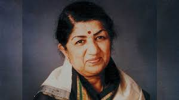

Lata Mangeshkar (1929-2022)
A short biography of Lata Mangeshkar:
- Name: Lata Mangeshkar
- Nick Name: Lata Didi
- Other Names: Didi, Nightingale of India
- Born: September 28, 1929
- Birth Place: Indore, Madhya Pradesh
- Profession: Playback Singer, Music Composer (occasional),Film Producer (occasional)
- Years Active: 1942 to present
- Parents: Pt. Dinanath Mangeshkar, Shudhhamati
- Sister: Asha Bhosle, Usha Mangeshkar and Meena Mangeshkar
- Brother: Hridayanath Mangeshkar
- The later editions of Guinness Book stated that Lata Mangeshkar had sung no fewer than 30,000 songs between 1948 and 1987.
- She was never married.
- She was known as the Nightingale of India.
- She was conferred India's highest civilian award Bharat Ratna in 2001.
- Hobbies: Cooking, Photography, Watching Cricket Matches,Playing the slot Machines in las Vegas
- Date of Date: 6 February 2022
- Place of Death: Breach Candy Hospital, Mumbai
- Cremation Site: Shivaji Park, Mumbai
- Age (at the time of death): 92 Years
- Death Cause: COVID-19 complications and multiple organ failure